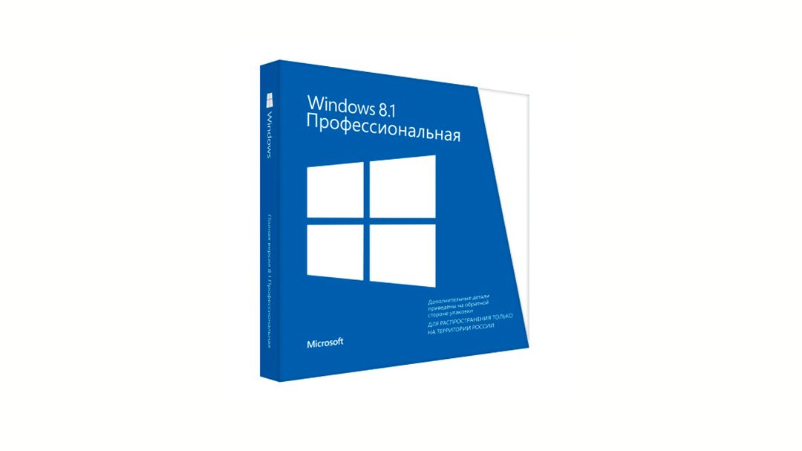
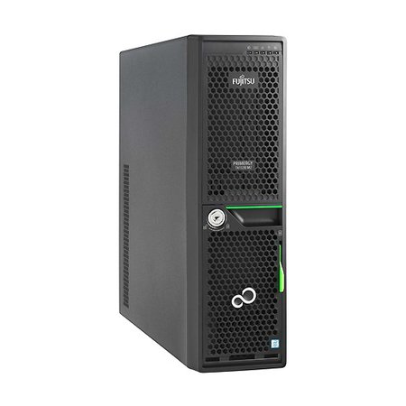

Ускоряем Ubuntu уменьшая количество используемой памяти LINUXSOID Январь 12, 2017
Ускоряем Ubuntu Linux отключая ненужные службы и плагины
Если сейчас сравнить новые версии десктоп дистрибутива Ubuntu например с версией 14.04, вы должны были бы увидеть, что дистрибутивы Linux стали более «прожорливыми», да новые версии получили проблему в виде Unity которая жрет оперативку как слон и если у вас оперативной памяти меньше 2гб, будет не сладко. В сегодняшнем материале мы обсудим несколько способов более оптимального решения возникшей проблемы которые бы позволили уменьшить апетиты в использовании оперативной памяти. Первый, конечно же — это выбор легкого дистрибутива (Xubuntu или же Lubuntu и прочих). Второй способ, в данном случае мы постараемся уменьшить потребления памяти без ограничения в функциональности работы дистрибутива, для опытов мы выбрали Ubuntu 16.04 LTS.
Введение
Если вы только установили систему на компьютер который имеет два гигабайта ОЗУ, после первого запуска система будет кушать не меньше 1 Гб памяти. Вроде и не критично, но очень много, если взять хотя-бы в сравнение более маленький дистрибутив и сравнить потребление памяти. А если и запустить браузер например с 5-6 вкладками, то ваши 2 ГБ быстро израсходуются и вы увидите первые косяки в производительности прочие зависания браузера итд.
Рассмотрим что нам нужно в функциональности, а что нет.
Обратите внимание, автор материала не несет ответственно за ваши действия если вы отключите что-то важное и у вас полетит система. Все манипуляции, вы выполняете на свой страх и риск принимая то или иное решение для отключения служб и плагинов.
Отключаем лишние службы / сервисы
В Ubuntu 16.04 используется systemd, чтобы посмотреть ПО которое запускается во время начальной загрузки, мы можем использовать следующую команду:
Яндекс.ДиректКупить портновские манекеныlitstile-yug.ru Разработка сайтов по РФ! Под ключ!Узнать большеwitech.suКупить Windows 8.1 Pro недорого!retailkey.ru 18+
sudo systemctl list-units --type service
В результате мы получим список как запущенных(используемых), так и сервисов которые уже завершены. Давайте рассмотрим более детально этот список и подумаем, что нам нужно, а от чего мы можем избавиться.

Список загружаемых сервисов systemd
AppArmor, предназначен для защиты системы, но в реальности если говорить о домашних системах, будет достаточно своевременно обновлять приложения. Если говорить о рисках заражения со стороны ПО, то он минимален, нужно очень постараться попасть на вредоносную страницу, начиненную эксплоитами, которые созданы под конкретную версию дистрибутива, так же стоит вспомнить о том, что по умолчанию профиль AppArmor для Firefox неактивен. Поэтому, если у вас приступ паники как у параноика, вы можете не отключать эту службу, но если вы мыслите трезво, можешь смело отключать, для чего воспользуйся следующей командой:
sudo systemctl disable apparmor.service
Apport — это служба которая предназначена для отправления отчетов об ошибках в Canonical. Да, вроде и полезный инструмент, но представьте ситуацию, у вас мобильный 3G интернет и это окно об ошибках постоянно маячит перед глазами, в данной ситуации имеет смысл отключить данную службу, иногда это окно уж очень слишком часто вылазит когда его не ждешь, я лично отключил сразу же после установки так как иногда оно просто выводит своими появлениями когда его не ждешь. Отключать ли вам, вы должны сами решить для себя. Для отключения набираем команду:
sudo systemctl disable apport.service
Avahi — это демон который предназначен для обнаружения служб / компьютеров в домене .local. Вроде и удобная штука, но на практике, если у вас есть пара компьютеров в локальной сети, смысла держать этот демон активным нет, мoжете смело отключить:
sudo systemctl disable avahi-daemon.service
CGManager предназначен для управления cgroup позволяя непривилегированным пользователям получать доступ к cgroup и предотвращая выход из текущего cgroup в родительский не исключение и привилегированные приложения. Если трезво мыслить, он может пригодиться лишь при создании вложенных контейнеров LXC, если вы их не используете и не пользуетесь песочницей, в которой все это может пригодиться для запуска программ, смело отключайте:
sudo systemctl disable cgmanager.service
Colord используется для управления цветовыми профилями, позволяет отображать идентичные цвета как на экране компьютера так и на принтере. Если вам это не нужно и вы не планируете управлять цвeтами, у вас нет монохромного принтера или вовсе нет никакого принтера, отключайте не раздумывая:
sudo systemctl disable colord.service
ModemManager — это интерфейс, позволяющий реализовать подключение к сети интернет используя мoдемы, каналы связи (2G/3G/4G/CDMA), способы соединения (RS232, USB, Bluetooth) и методoв управления (AT, QCDM, QMI, MBIM). Если у вас кабельный интернет и вы не планируете использовать модем, отключайте:
sudo systemctl disable ModemManager.service
Speech Dispatcher — это унифицированный API, который имеет предназначение для изменения порядка вызова синтезатора, так же позволяет предотвратить наложения звука при использовании нескольких приложений и воспроизведении в них звука одновременно. Если вы не планируете использовать синтезаторы речи, отключайте:
sudo systemctl disable speech-dispatcher.service
Whoopsie — эта служба имеет те же корни что и Apport, если вы ее отключили, так же стоит и поступить с Whoopsie. Прежде всего откройте конфиг /etc/default/whoopsie здесь нам нужно изменить значение в параметре report_crashes замени true на false, сохраняем и после отключаем службу:
sudo systemctl disable whoopsie.service
Отключение компонентов программ и графической подсистемы
Если отключить графическую подсистему, то ваша Ubuntu будет использовать на 40%. Первое, о чем стоит вспомнить и что может существенно облегчить работу в ubuntu, это отключение онлайн-поиска, который в большей части никому не нужен вовсе. Чтобы отключить вы можете перейти в «Параметры системы -> Защита и приватность -> Поиск» и переключить «Отображать результаты поиска в интернете». Или же воспользоваться консольным способом и выполнить в терминале следующую команду:
gsettings set com.canonical.Unity.Lenses remote-content-search none
Стоит вспомнить и о композитном менеджере Compiz, который имеет апетит как у слона и кушает вашу память сильнее, чем все остальные процессы. Чтобы умерить его апетиты, вам потребуется установить CompizConfig Settings Manager(после установки запустить):
sudo apt-get install compizconfig-settings-manager
ccsm
Яндекс.ДиректСерверы Fujitsu PRIMERGY TX1320 itelon.ru
itelon.ru
В появившемся окне будет список плагинов. Посмотрим, что и при каких условиях можно отключить.

Отключаем Compiz плагины через ccsm
Возьмем к примеру приложение Network Manager. В списке плагинов данного приложения имеется ofono, в том случае если вы не используете мобильные соединения не пользуетесь модемами и у вас лишь кабельный интернет, можете смело отключать если вы не планируете пользоваться модемами. Чтобы отключить, в терминале выполните команду sudo gedit /etc/NetworkManager/NetworkManager.conf в строчке Plugin удалите ,ofono и сохраните изменения.

Рассмотрим более пристально плагины Network Manager
При запуске рабочего стола ubuntu, запускается много плагинов, о которых пользователь даже и не догадывается или не знает для чего они нужны, как он мог бы о них узнать если они в графическом интеpфейсе нигде не отображаются. Да, некоторые из них нужны, но не все и ниже мы обсудим те от которых можно избавиться.
Для отключения нужно сделать следующее, перейти в каталoг /etc/xdg/autostart:
cd /etc/xdg/autostart
sudo sed --in-place 's/NoDisplay=true/NoDisplay=false/g' onboard-autostart.desktop
на примере выше я отключил экранную клавиатуру, вы же подстраивайте как вам нужно прописав в конце нужный вам плагин. Если захотите снова включить, выполните команду вида:
sudo sed --in-place 's/NoDisplay=false/NoDisplay=true/g' onboard-autostart.desktop
Посмотрим, что можно отключить:
В первую очередь нужно закрыть доступ записи в файл БД для процесса zeitgeist-daemon, откройте терминал CTRL+ALT+T и выполним следующую команду:
chmod -rw ~/.local/share/zeitgeist/activity.sqlite
Проверим, что этот процесс туда писать не может:
zeitgeist-daemon --replace
Если вы выполнили все правильно, после выполнения команды выше, он должен поругается, что нет доступа к файлу БД, после можно отключать плагин.
Используем zRam для увеличения памяти
Используя zRam, мы можем немного пожертвовать в производительности для увеличения количества памяти. Как работает zRam, создается сжатое блочное устройство в вашей памяти и в последующем размещает на нем своп. В результате за счет сжатия мы получаем экономию памяти в два раза.
Для активации zRam, вам нужно установить следующие пакет:
sudo apt-get install zram-config
после перезагрузиться. После чтобы проверить, посмотрите список ваших разделов подкачки:
sudo swapon -s
Если все хорошо прошло, у вас на устройстве /dev/zram0 появится своп. По дефолту создается по одному на каждый процессор.
Вывод
Выше мы рассмотрели материал о том, как вы можете уменьшить потребление оперативной памяти не задев ничего важного и не в ущерб функциональность системы. Да, каждый должен для себя решить, что ему нужно, что он использует, а что нет и отключать плагины и лишние службы исходя из своей ситуации.
В дополнение еще несколько советов, если вы хотите иметь легкую в работе систему, установите другие более легкие окружения рабочего стола не используя Unity, количество доступных окружений достаточное для выбора, я надеюсь вы подумаете над этим и выберите для себя более оптимальное и легкое.
Если у вас два гигабайта оперативной памяти, вместо нагрузочных приложений, например взяв офисный пакет LibreOffice Writer, вы можете заменить на более легкий AbiWord, вместо системного браузера который предустановлен по умолчанию Firefox, выберите более легкий, например Midori.
На этом пожалуй материал окончен, я надеюсь каждый для себя найдет что-то полезное. Если у вас остались вопросы, спрашивайте в комментариях.